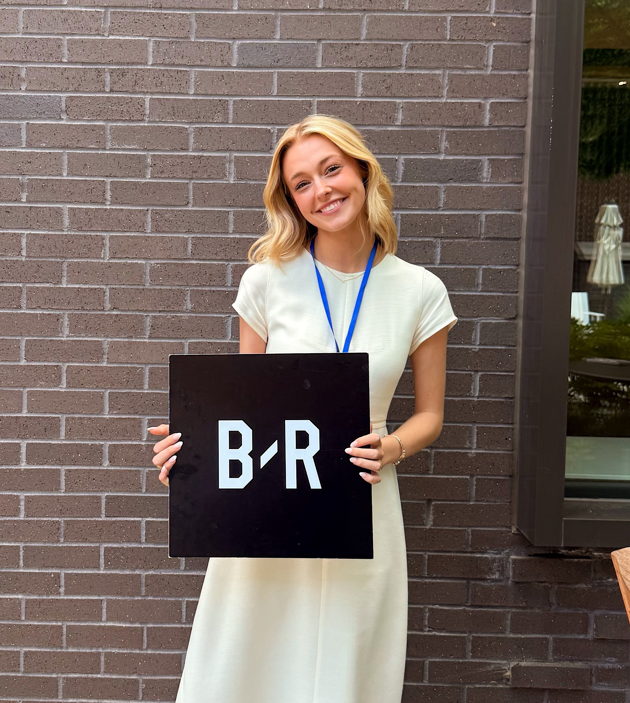
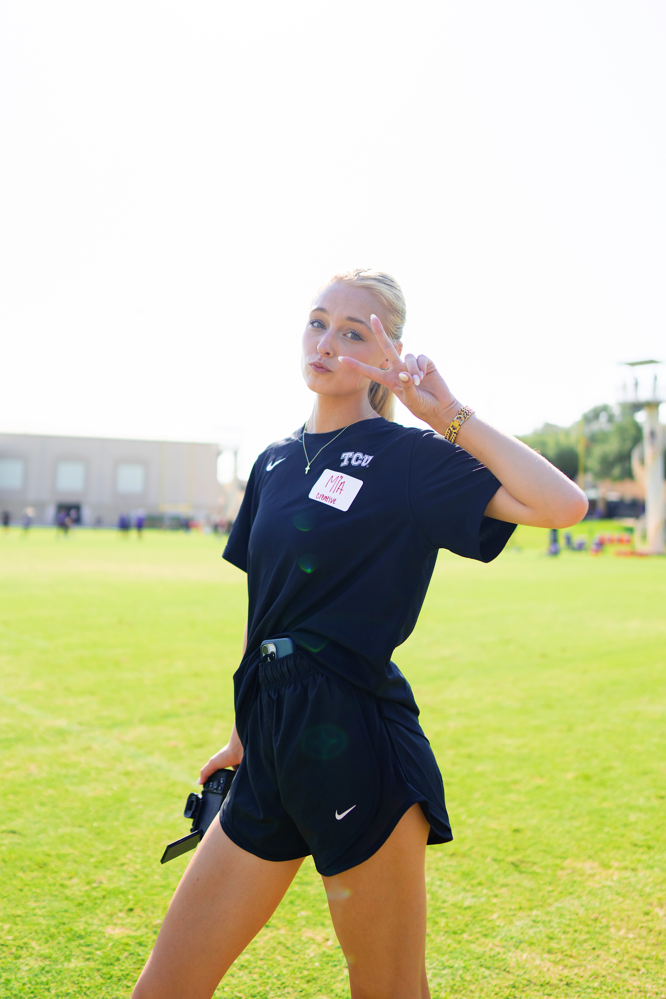
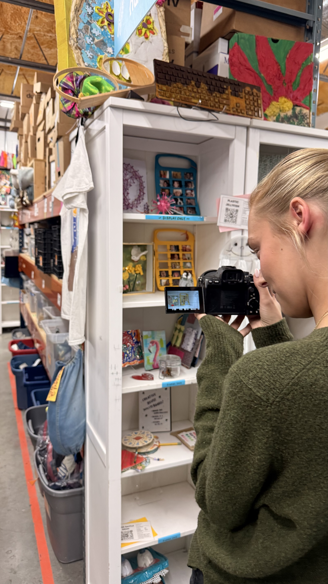

What I Want to Learn
I really want to build my confidence when it comes to coding. For so long I have just avoided it and made excuses, but I am ready to face the challenge and improve!
My Skills
-
Social Media
I have been working in social media for 5 years (since I was a senior in high school)! I have seen all different types of trends and worked in many different fields!
-
Advertising
I worked with 2 real life clients at TCU's in house ad agency ROXO! I led as the Social Media Manager for both clients!
-
Data Analytics
I am confident in my data analysis skills accross multiple pltaforms, especially social media and sports analysis!
-
Coding
I have grown so much in my coding abilities, and I am a fast learner! I am excited to continue improving!



About Mia
I am a senior at TCU studying Strategic Communications & Digital Culture and Data Analytics. I am originally from Georgia but have loved my time in Fort Worth for the past few years! My experience in social media, advertising and analytics helps me bring both creative ideas and measurable goals to each project! I am currently looking for a post-grad job where I can expand my skills, be apart of a great team, and work for a bigger purpose!
Projects
-
Personal Portfolio
The site you are reading. Built from scratch in HTML and CSS.
Contact
The best way to reach me is by email!
- school email: mia.eberle@tcu.edu
- personal email: miaeberle@icloud.com
- My GitHub
I am excited to connect with you!
I am available for full time roles starting January 2027.